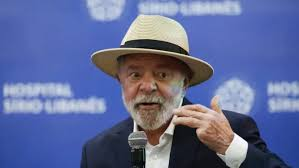

Em meio ao nervosismo do mercado financeiro nos últimos dias, o presidente Luiz Inácio Lula da Silva afirmou nesta quarta-feira (3) que o Brasil manterá a responsabilidade fiscal e o controle da inflação.,
"Estejam certos que a comida vai ficar barata, estejam certos que esse país jamais serirresponsável do ponto de vista fiscal. Eu não tenho um dia de experiência, eu tenho 10 anona Presidência", disse Lula a jornalistas após o evento de lançamento do Plano Safra dagricultura empresarial, no Palácio do Planalto.
A declaração de Lula ocorre um dia depois de o dólar disparar frente ao real, na maior altem cerca de um ano e meio, no contexto de alta das taxas de juros nos Estados Unidos também das críticas recentes do presidente brasileiro ao presidente do Banco CentralRoberto Campos Neto. A jornalistas, Lula evitou comentar sobre a oscilação da moednorte-americana e ressaltou sua experiência à frente do governo, já que está em seu terceirmandato presidencial.